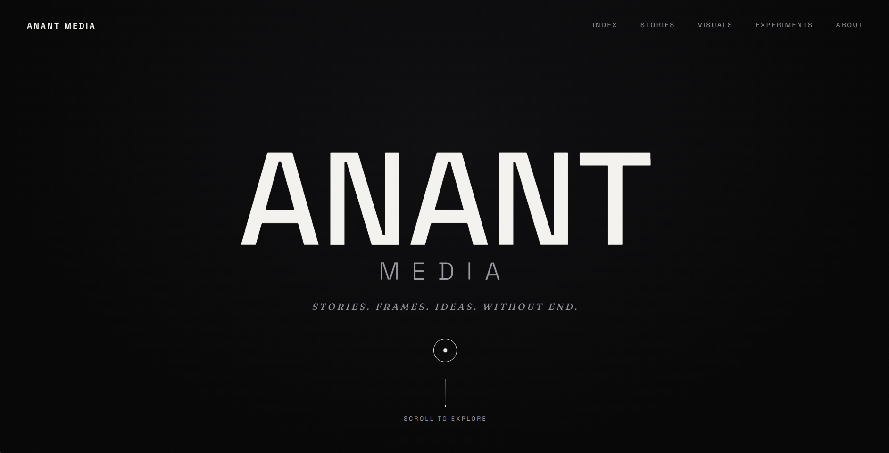

WHAT IF?
WHAT IF STORIES
COULD MOVE,
THINK,
AND EVOLVE?
CORE PHILOSOPHY
IDEAS EXIST HERE
IDEAS EXIST HERE
BEFORE THEY KNOW
WHAT THEY'RE BECOMING.
A story may begin as an image. An image may become motion. Motion may become an interaction.
An experiment may fail. The failure may reveal another direction entirely.
This is not a collection of finished products. It is a space for creative questions.
01 / AI FILMS
EXPERIMENT ACTIVE
Cinema imagined with new tools.
Short cinematic experiments made at the edge of generative and traditional filmmaking where direction still matters more than the tool doing the rendering.
02 / MOTION
EXPERIMENT ACTIVE
Type, images, and rhythm in movement.
Kinetic typography and image studies exploring what happens when a still frame is given a pulse.
03 / CONCEPT ART
EXPERIMENT ACTIVE
Worlds explored before they become stories.
Layered visual studies the raw material a future graphic novel or film might eventually be built from.

04 / DIGITAL EXPERIENCES
EXPERIMENT ACTIVE
Stories that require participation.
Browser-native pieces that only complete themselves once someone moves through them.